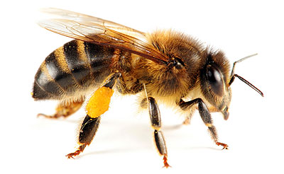

Aliquam tempor metus sit amet purus pharetra, sed interdum
tortor posuere. Sed facilisis porta eros. Suspendisse nec mi enim.
Nulla maximus sed dolor ac elementum. Donec non justo dictum,
sodales justo et, fermentum dolor. Integer commodo eros ut nisl
bibendum, nec pretium lacus eleifend. Curabitur bibendum augue non
ante euismod, at lacinia diam mollis. Vivamus malesuada lacus
neque, a semper ex fermentum auctor.
Volcanes en el mundo
Volcanes- fotos espectaculares
Así afecta el cambio climático al agua del planeta
Equilibrio químico Los mares, que cubren el 71 % de nuestro
planeta azul, absorben actualmente tanto CO2 generado por
actividades humanas y tanta energía del Sol que la química y
las temperaturas de las aguas marinas están poniendo en
peligro a muchos organismos. Ya sea en estado líquido, sólido
o gaseoso, el agua es vital para nuestro planeta. Dependemos
de ella para beber, para la agricultura y para la ganadería, e
innumerables especies necesitan los ecosistemas de agua dulce
para vivir. Los océanos contribuyen a modular los niveles de
CO2 y a mantener las temperaturas globales, a la vez que
transportan nutrientes y albergan ecosistemas marinos. Los
estragos de la sequía. Al principio esa agua llenará los ríos
y las cuencas fluviales, pero conforme haya menos hielo,
también se verán mermadas las aguas de escorrentía y el agua
dulce disponible. Si las medidas de conservación no atajan el
problema, surgirá la amenaza de las restricciones de agua.
Volcanes que no debes perder de vista en 2018
Monte Merapi, Indonesia El Merapi es uno de los volcanes más
peligrosos de Indonesia debido a sus frecuentes erupciones y
sus pendientes densamente pobladas. Con una cifra de muertos
de casi 400 personas, su erupción de 2010 es hasta ahora la
más mortífera acontecida durante el siglo XXI.
¿Cómo ven las estrellas de mar?
Un grupo de científicos ha descubierto que algunas estrellas
de mar de aguas someras y profundas poseen ojos bien
desarrollados
Una gran diversidad de abejas es crucial para asegurar la
polinización de los cultivos
Una gran diversidad de abejas es crucial para asegurar la
polinización de los cultivos Un estudio realizado con la
participación del Consejo Superior de Investigaciones
Científicas -CSIC- ha demostrado que conservar una gran
diversidad de especies de abejas es fundamental para
asegurar la polinización de los cultivos. De las 100
especies que se encontraron presentes, más de 50 especies
eran necesarias para asegurar su polinización El trabajo,
publicado en la revista Science, ha contabilizado las
especies de abejas necesarias para polinizar tres cultivos,
sandía, grosella y arándano, en más de 50 fincas agrícolas,
y ha concluido que, de las 100 especies que se encontraron
presentes, más de 50 especies eran necesarias para asegurar
su polinización. “Las abejas, de las que hay más de 20.000
especies -el doble que las de pájaros, por ejemplo- tienen
un papel clave para el ecosistema y para nosotros, ya que
median la polinización de las plantas con flor, incluyendo
la producción de las frutas y verduras que nos comemos”,
explica Ignasi Bartomeus, investigador del CSIC en la
Estación Biológica de Doñana, quien ha participado en este
estudio, liderado por la doctora Rachael Winfree, de la
Universidad de Rutgers, en Estados Unidos).

Los candidatos a Árbol Europeo del año 2018
Los olmos centenarios de Cabeza del Buey aspiran a
convertirse en el Árbol Europeo del año. Te mostramos en
esta galería fotográfica al aspirante español, y a los
competidores a los que tendrá que enfrentarse por el
preciado título de Árbol Europeo del año del 2018. Este
conjunto de olmos centenarios han formado parte de la
historia de Cabeza del Buey al situarse en el recinto de la
ermita de Nuestra Señora de Belén, enclave emblemático, por
su valor histórico y artístico para cabeza del buey y para
la comarca de la serena. Estos olmos han formado parte de la
vida de la localidad desde el momento en que han servido de
zona de sombra para los asistentes a la romería de nuestra
señora de Belén, una de las más antiguas que se viene
realizando en La Serena, y de cuya celebración se tiene
constancia desde 1650. Situado a 11 kilómetros de Cabeza del
buey, el santuario de Nuestra Señora de Belén es un
monumento de gran interés por la fusión de distintos
estilos, desde el medieval al barroco. La documentación de
la que se dispone indica que la creación del templo sucedió
de la mano de los templarios en el siglo XIII, cuando esta
comarca fue conquistada por los musulmanes. La ermita
constituye un conjunto de edificaciones de distintas épocas.
La parte delantera corresponde al convento templario,
constituyendo el núcleo inicial del actual complejo. Adosado
al bello claustro, el cual reviste de extraordinario
interés, se aneja la iglesia del siglo XVII.